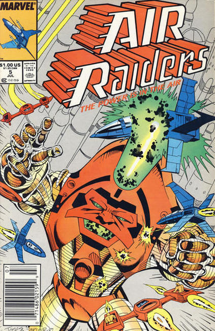
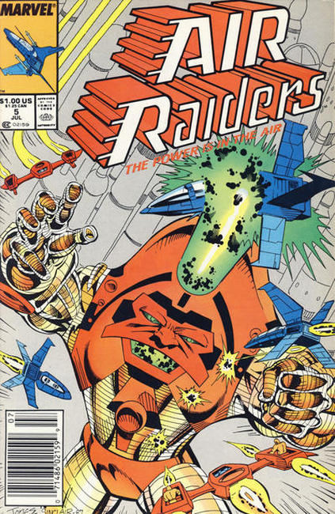

Issue #1: On the planet Airlandia, air is more valuable than gold and it's the Air Raiders battling evil ruler Aerozar and his Tyrants of Wind. In this issue, Rokk stuggles with the question of whether or not the Air Raiders have the right to let a village die even if it is for the greater good and will help in the long run in the war in "Sins of the Father."
Issue #2: On the planet Airlandia, air is more valuable than gold and it's the Air Raiders battling evil ruler Aerozar and his Tyrants of Wind. In this issue, Eeleta is captured while on an Air Raider mission. But her capture is no accident and her prison turns out to be not much of a prison in "Subterfuge."
Issue #3: On the planet Airlandia, air is more valuable than gold and it's the Air Raiders battling evil ruler Aerozar and his Tyrants of Wind. In this issue, after finding out that her father may still be alive, Eeleta chooses to remain a prisoner but finds out that there are other plans for her while the Air Raiders attempt their biggest raid yet against Aerozar in "The Good Fight."
Issue #4: On the planet Airlandia, air is more valuable than gold and it's the Air Raiders battling evil ruler Aerozar and his Tyrants of Wind. In this issue, the Air Raiders come up with a plan to take advantage of evil Baron Ee-Lon's obsession in finding rare orchids and going to great lengths to do so in "Orchids for the Baron."
Issue #5: On the planet Airlandia, air is more valuable than gold and it's the Air Raiders battling evil ruler Aerozar and his Tyrants of Wind. In this issue, when the Air Raiders fall into Imperator Aerozar's trap, the battle between the two forces takes them into a wind tunnel which leads them to a mysterious underground city in "Winds in the Darkness."